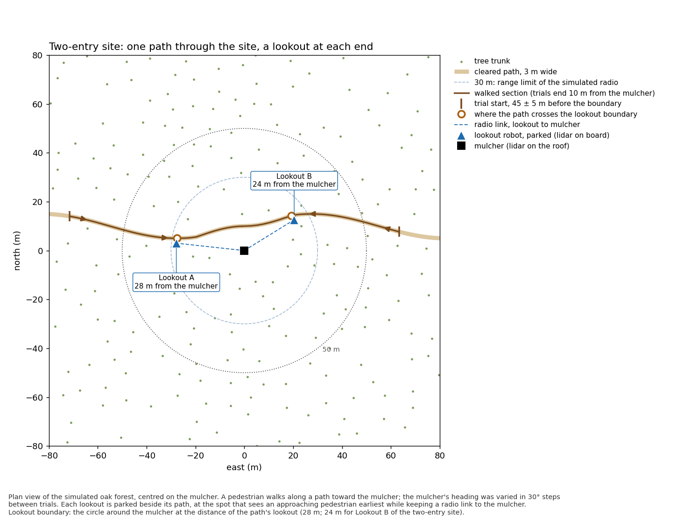
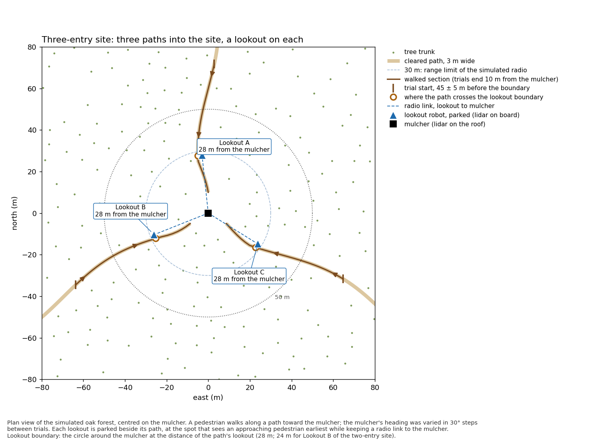
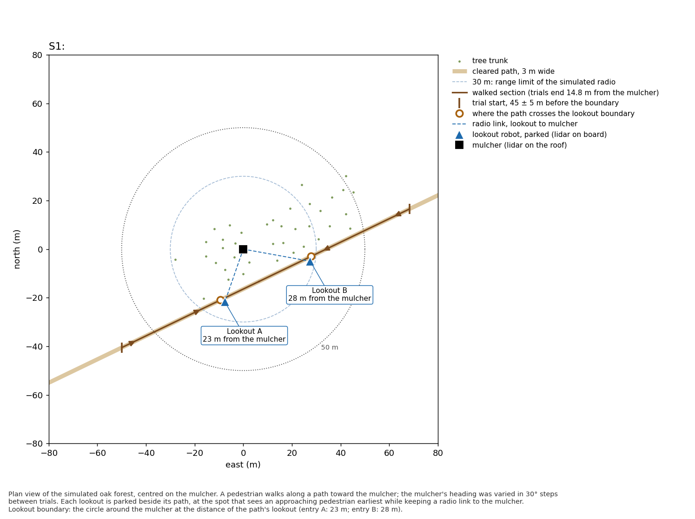

Multi-Robot Active Cooperative Perception
Perceptive exploitation for support
Can robots parked as lookouts on the paths into a forestry mulching site warn the mulcher of an approaching pedestrian earlier than the mulcher's own lidar?
The mulcher's cutting head blocks much of its lidar's forward view. Small ground robots with the same lidar were parked on the access paths as lookouts. Every sensor observed each trial at the same time, so the mulcher alone and the mulcher with lookouts are compared on identical trials.
The experiment
- Type
- Simulated experiment (Ignition Gazebo, Fortress release). Two further checks, made after these results, follow the main results: the same experiment on the tree layout of a real site, and all trials again with a published moving-object detector.
- Site
- Oak forest, 160 m radius, flat ground, 83–85 trees per hectare, 3 m paths; mulcher at the centre with a Velodyne VLP-16 lidar on its roof (2.1 m). The cutting head blocks 15 of the 16 laser channels within ±30° ahead.
- Layouts
- Two-entry site (one path through, two lookouts) and three-entry site (three paths, three lookouts).
- Lookouts
- Clearpath Husky robots with the same lidar, parked beside each path at the position, computed from the map, that sees a pedestrian earliest while keeping a radio link (range limit 30 m). Four are 28 m from the mulcher; Lookout B of the two-entry site is 24 m, as no free spot lies farther out.
- Trials
- A 1.74 m pedestrian model walks along a path at 1.3 m/s in 0.5 m steps, from 45 m (±5 m) before the lookout boundary to 10 m from the mulcher. 12 mulcher headings × each entry × 2 repetitions: 48 and 72 trials, plus 48 control trials.


Detection and outcomes
The rule was fixed in advance: returns at least 0.3 m closer than a 10-scan background are grouped within 0.5 m (in 3-D); an alarm is a group of at least 5 points on at least 2 laser rings, seen in two consecutive scans. An alarm within 1 m of the pedestrian is a detection; any other is a false alarm. The combined system alarms as soon as the mulcher or any lookout does.
- Lookout boundary
- The circle around the mulcher at the path's lookout distance (28 m; 24 m for Lookout B). Primary outcome: detection before the pedestrian reaches it.
- Warning time
- Time from the first alarm until the pedestrian reaches the boundary; negative if after.
- Alternative rules
- Horizontal clustering (the 0.5 m grouping measured horizontally) and an ideal detector (at least 5 points on the pedestrian, from ground truth; an upper bound).
- Control trials
- 12 trials per site repeated with the lookouts moved 1 km away, and again with them never created.
Results
The lookouts give much earlier warning. The mulcher alone first detected the pedestrian at about 14 m, always after the boundary. With the lookouts, every pedestrian was detected before the boundary, about 40 m out: a median of 22 s earlier on the same trial, never less than 20 s. The same held at a real site's tree layout and with a published detector (Checks 1 and 2 below).
| Specified rule | Two-entry site · 48 trials | Three-entry site · 72 trials |
|---|---|---|
| Detected before the boundary: mulcher alone / with lookouts | 0 / 48 · 48 / 48 | 0 / 72 · 72 / 72 |
| Median warning time: mulcher alone / with lookouts | −12.5 s / +11.0 s | −11.2 s / +10.8 s |
| First alarm earlier with lookouts, same trial (median; minimum) | 23.1 s; 20.0 s | 21.9 s; 21.5 s |
| Distance at first alarm (median): mulcher alone / with lookouts | 13.9 m / 39.4 m | 13.7 m / 41.7 m |
| Never detected by the mulcher alone | 4 | 18 |
| Exact McNemar test, detection before the boundary | p = 7.1 × 10⁻¹⁵ | p = 4.2 × 10⁻²² |
95 % Wilson intervals for 0 / 48 and 48 / 48: 0–7 % and 93–100 %; for 0 / 72 and 72 / 72: 0–5 % and 95–100 % (approximate, as trials share headings and paths). Same-trial comparisons use trials detected by both (44 of 48, 54 of 72). No sensor detected a pedestrian beyond 50 m under this rule.
![Grouped bar chart in four panels. Columns: two-entry site (48 trials) and three-entry site (72 trials). Top row, detection before the lookout boundary: the mulcher alone reaches 0 % under the specified rule, 62 % and 54 % with horizontal clustering, and 79 % and 76 % with the ideal detector; the mulcher with lookouts reaches 100 % under all three rules. Bottom row, detection more than 50 m from the mulcher: the mulcher alone reaches 0 % under every rule; the mulcher with lookouts reaches 0 % under the specified rule and 100 % under the other two.](figures/catch_rates.png)
![Six panels of curves: rows for the two sites, columns for the specified rule, horizontal clustering and the ideal detector. Each panel shows the percentage of trials warned at least t seconds before the lookout boundary, for t from −18 to 50 s. Under the specified rule the mulcher-alone curve falls to zero before t = −8 s, while the combined curve stays at 100 % until about 10 s. Under the other two rules the mulcher-alone curve falls to zero by about 10 s, while the combined curve stays at 100 % until about 25 s.](figures/warning_curve.png)
Interpretation
- The rule limits range. With 3-D grouping at 0.5 m and rings 2° apart, no group spans two rings beyond about 14 m, so every boundary lies out of the mulcher's reach. The same-trial time gain is therefore the fairer measure.
- Looser rules help the mulcher, and the lookouts more. With the alternative rules the mulcher alone detects 54–79 % before the boundary (median warning 1–8 s); with lookouts, 100 %, beyond 50 m, with 27–29 s.
- Lookouts cover the blind sector. Every trial the mulcher never detected came within 45° of its front; the lookouts detected all of them.
- Each lookout covers its own entry. Removing any one lookout in the three-entry site drops detection before the boundary to 67 %.
- Lookouts do not change what the mulcher sees. In the control trials the mulcher's first alarm fell within one 0.5 m step of the matching trial in all 24 per site.
Check 1: the tree layout of a real site
Do the lookouts still help among the trees of a real mulching site, rather than in an evenly spaced forest? The experiment was repeated on the trees of a surveyed site. Only the site changed; the lidar, detection rules, pedestrian, trial design and lookout placement rule were the same.
- Site
- The 38 trees found in the site's lidar map, inside the surveyed area, each as the oak model scaled to its measured height (4.8–21.9 m) and crown. Flat ground; no bushes, fences or walls.
- Mulcher
- Parked among the trees, turned through the same 12 headings.
- Path
- One straight path along the edge of the trees, 3.3 m from the nearest trunk. It passes 14.8 m from the mulcher at its closest, where the trials end.
- Lookouts
- Placed by the same rule: Lookout A 23 m and Lookout B 28 m from the mulcher. 48 trials and 24 control trials.

The result holds at the site. Under the specified rule the mulcher alone never detected the pedestrian. This follows from the layout: the rule cannot fire beyond about 14 m, and the path never comes closer than 14.8 m. Under the looser rules, which the mulcher can meet, the lookouts still gave the first alarm a median 22–23 s earlier on the same trial.
| Site · 48 trials | Specified rule | Horizontal clustering | Ideal detector |
|---|---|---|---|
| Detected before the boundary: mulcher alone / with lookouts | 0 / 48 · 48 / 48 | 33 / 48 · 48 / 48 | 36 / 48 · 48 / 48 |
| Median warning time: mulcher alone / with lookouts | — / 9.6 s | 2.8 s / 25.8 s | 5.2 s / 26.6 s |
| First alarm earlier with lookouts, same trial (median; minimum) | — | 23.1 s; 13.5 s | 22.3 s; 12.7 s |
| Distance at first alarm (median): mulcher alone / with lookouts | — / 36.4 m | 26.3 m / 55.5 m | 28.5 m / 57.5 m |
Exact McNemar test, detection before the boundary under the specified rule: p = 7.1 × 10⁻¹⁵. No false alarms from any lidar. Median warning times of the mulcher alone are over the trials it detected.
- Each lookout covers its own end of the path. Lookout A gave the first alarm in all 24 trials from the west, Lookout B in all 24 from the east.
- The trees hardly limit the mulcher. With every tree removed, the mulcher's first detection in the 12 control trials came at the same distance in 8 of 11. Its limits are the lidar's range for a person and its cutting head: under horizontal clustering it missed 4 of the 8 trials that came in within 30° of its front, and none of the other 40.
- The real site blocks more than the oak models. With the oak models replaced by the site map's own points (5 cm cubes), the mulcher detected the same 11 of 12 control trials, but those from the east a median 4.6 m closer.
Check 2: a published moving-object detector
Is the result a product of our own detection rule? Every trial of the two forest layouts and of the site was simulated again with each lidar's full scans saved, and M-detector (Wu et al., Nature Communications, 2024), a published detector of moving objects in lidar scans, was run as every lidar's detector. Its published parameters for a similar lidar were changed only for the simulated lidar's geometry and the scan timing, and were not tuned on the trials. Our alarm rule on its output was fixed before any output was seen: points it marks as moving, grouped within 0.5 m horizontally, at least 3 points, seen in two consecutive scans within 1 m.
The result holds. With M-detector the mulcher alone sees the pedestrian much farther out than under the specified rule, and detects 31–71 % before the boundary. With the lookouts, every pedestrian was detected before the boundary, and the first alarm came a median 23–29 s earlier on the same trial.
| M-detector | Two-entry site · 48 | Three-entry site · 72 | Real site, oak models · 48 | Real site, map points · 48 |
|---|---|---|---|---|
| Detected before the boundary: mulcher alone / with lookouts | 34 / 48 · 48 / 48 | 42 / 72 · 72 / 72 | 18 / 48 · 48 / 48 | 15 / 48 · 48 / 48 |
| Median warning time: mulcher alone / with lookouts | 2.3 s / 28.8 s | 3.5 s / 26.9 s | −1.7 s / 24.6 s | −4.0 s / 25.0 s |
| First alarm earlier with lookouts, same trial (median; minimum) | 26.5 s; 0.8 s | 23.1 s; 0 s | 25.6 s; 18.1 s | 28.7 s; 20.4 s |
| Distance at first alarm (median): mulcher alone / with lookouts | 27.2 m / 59.9 m | 32.1 m / 62.1 m | 24.7 m / 54.1 m | 21.5 m / 55.7 m |
| Never detected by the mulcher alone | 2 | 15 | 4 | 4 |
| Exact McNemar test, detection before the boundary | p = 1.2 × 10⁻⁴ | p = 1.9 × 10⁻⁹ | p = 1.9 × 10⁻⁹ | p = 2.3 × 10⁻¹⁰ |
"Map points": the site with its oak models replaced by the site map's own points; all 48 trials of this world were simulated for this check. Median warning times of the mulcher alone are over the trials it detected. No false alarms from any lidar in any world.
- M-detector reaches about as far as horizontal clustering. The mulcher's first detections came at about the distance of the horizontal clustering rule, and 3–6 m short of the ideal detector's.
- Most trials the mulcher never detected came in near its front, where the cutting head blocks its lidar, as under the other rules.
- In 4 trials of the three-entry site the mulcher gave the first alarm itself, from a few returns on the pedestrian 62–66 m out along a path. In the other 116 forest trials and all 96 site trials, a lookout was earlier.
- No false alarms in simulation says little about the field. On a real recording from the site, with the machine standing still, M-detector followed a pedestrian but also produced many short false tracks from the canopy and the ground. The simulation has no wind, no pose error and clean scans.
Limitations
- Only approaches along paths were tested.
- Lookout distance is capped by a conservative radio model (30 m range, 70 dB loss per trunk), not measured radio.
- Lookouts were placed from a perfect map and modelled as static; exploring and driving to position were out of scope.
- The pedestrian and forest are idealised: constant pace, trunks only, flat ground, exact lidar poses. Two forest layouts and one site layout.
- The site worlds model only the surveyed area. The path and the lookouts' spots lie just outside it, so the low objects the site map shows there (mostly under 1.5 m, close to Lookout B) were left out. They could block the lookouts' view, which would reduce their advantage.
- The two checks were made after the main results and are exploratory. M-detector was not tuned or tested for false alarms on real data.
Code and data
Branch exploitation_experiment of kalhansb/hmr_explo, under experiments/lookout/: analysis output in results/, logs in data/.
LOOKOUT_GPU=1 experiments/lookout/docker_run.sh lk_L2 42 /lookout/run_layout.sh L2 /runs/lookout/L2_full full
LOOKOUT_GPU=1 experiments/lookout/docker_run.sh lk_L3 43 /lookout/run_layout.sh L3 /runs/lookout/L3_full full
python3 /lookout/analyse.py --layout L2=/runs/lookout/L2_full --layout L3=/runs/lookout/L3_full \
--calib /runs/lookout/calib_gpu --out /runs/lookout/resultsThe site check is in experiments/site_lookout/ and the M-detector check in experiments/site_lookout/mdetector/; each README gives the set-up and the commands.